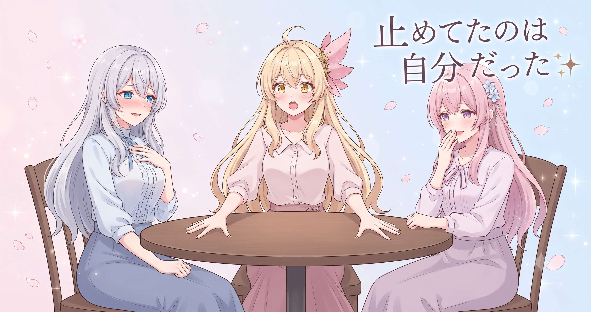
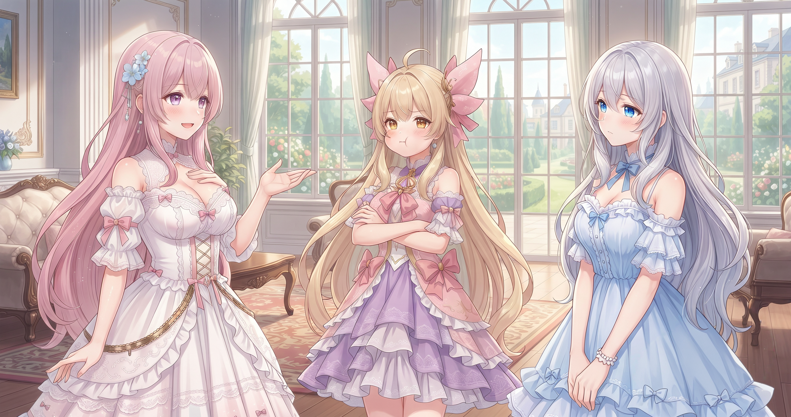
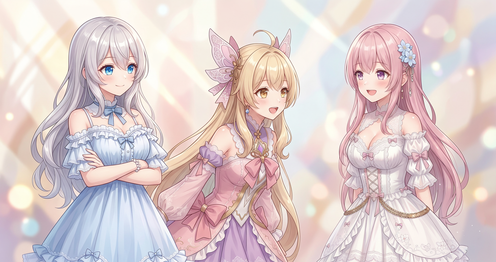
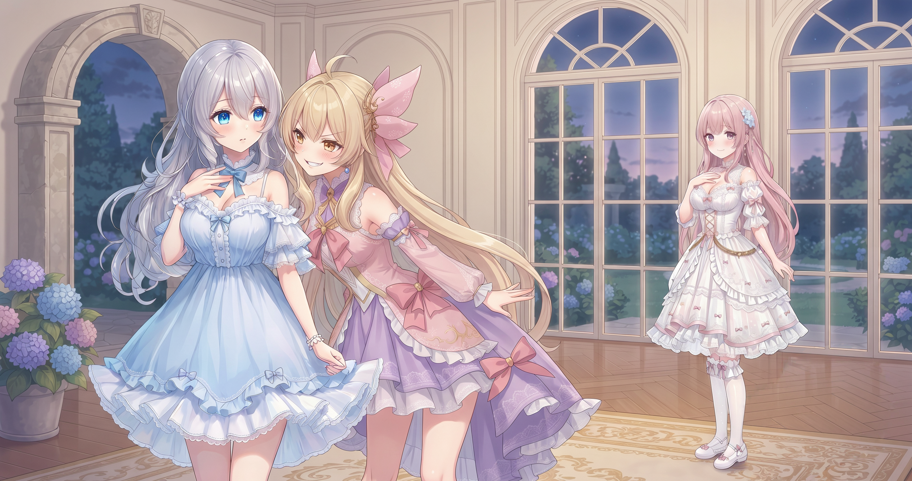
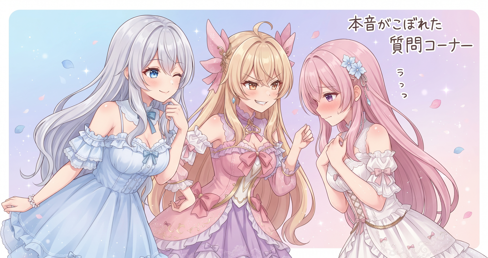

📌 3行まとめ
- 数日止まっていたブログの自動更新を再起動——原因は故障でなく「止めたまま」だったと判明
- 何度直しても消えるサイト装飾アニメの根本原因を特定、ページ生成の設計図ごと修正して再発を防止
- 「配信のご案内」ページを新設し、配信で話した内容を後から文字で振り返れる仕組みも完成
1. 止めてたのは自分だった：ブログ自動更新の再起動

数日分のブログが更新されていないことに気づき、原因を調べた。あちこちをさかのぼってみると、見つかったのは故障でもサーバーの問題でもなく「自分が一時停止にしていた」という事実だった。少し前にパソコン周りを整理したとき、複数の自動処理をまとめて止めていて、その中にブログ更新が混じっていたのだ。今日は再起動するだけでなく、初回実行が終わったかを必ず確認してから次に進む手順も整えた。
📝 ポイント（初心者向け解説・技術メモ・まとめ）
- 初心者向け: 自動処理が動いていないとき、壊れたと決めつける前に「自分で止めなかったか」を確かめると解決が早い。電気スタンドが点かなくて騒ぐ前にコンセントを確認するようなもの💡
- 技術メモ: 複数の自動タスクをまとめて一時停止した場合、再開チェックリストを用意して初回実行後にログを確認する運用にすると見落としを防げる
- ひとことまとめ: 止まる理由の多くは故障でなく「止めたまま」
2. 手で直しても消える謎：設計図に組み込んで根治

サイトの装飾アニメ——花びらやシャボン玉がふわふわ流れる演出——が、一部のページで消えていた。履歴をたどると、過去に2回、手作業でまったく同じ修正をした形跡があった。そして2回とも、その後また消えていた。原因は「ページを自動で組み立て直すとき、設計図に装飾の記述が含まれていなかった」こと。自動生成が走るたびに手で付け足した部分が上書きされていたのだ。今日は設計図ごと直し、今後は何回組み立て直しても装飾が残るようにした。
📝 ポイント（初心者向け解説・技術メモ・まとめ）
- 初心者向け: 同じ場所を何度も手で直しているなら「何かが自動的に元に戻している」サインかも。直す前に「上書きしている仕組みがないか」を確認するだけで無限ループから抜け出せる🔄
- 技術メモ: 静的サイトジェネレーターやビルドスクリプトで生成するページは、テンプレートやビルドスクリプト自体を修正しないと手動編集が毎回上書きされる
- ひとことまとめ: 手で直したものは、自動生成の前では一時しのぎ
3. 「配信のご案内」ページを一から作った

サイトに「配信のご案内」専用ページを新設した。コメントの遊び方・注意事項・応援の方法・ゲーム記録などを1か所に集約し、動画の説明欄はシンプルなリンクだけにする方式だ。ページには音符がふわふわ流れる専用アニメーション演出も付け、継続支援へのリンクも並べた。サイト全ページのフッターに案内ページへのリンクを追加し、どこから来ても見つけやすい導線に整えた。
📝 ポイント（初心者向け解説・技術メモ・まとめ）
- 初心者向け: 毎回同じ説明をコピペして貼り続けているなら、「案内ページを1つ作ってリンクを貼るだけ」にすると管理が楽になる。更新も1回で全体に反映される、デジタルのお知らせボードみたいなもの📋
- 技術メモ: サイトジェネレーターのフッターテンプレートにリンクを1か所追加するだけで全ページへの導線を統一できる。継続支援ページへのリンクはここに集約すると動線が安定する
- ひとことまとめ: 情報は散らかる前に「案内所」を作る
4. 配信で話したことを文字で残す仕組み

今までの配信記録は「視聴者のコメント」が中心で、配信者本人が何を話したかのテキストが残っていなかった。動画の自動字幕を処理して保存する仕組みを作ったことで、これからは日記や振り返りを書くときに「自分が話した内容」も材料にできるようになった。数時間に及ぶ配信でも、後から文字でざっと読み返せる。
📝 ポイント（初心者向け解説・技術メモ・まとめ）
- 初心者向け: 「自分が何を言ったか」の記録は意外と残りにくい。動画に自動字幕が付くなら、それを保存しておくだけで後から検索・再利用できる「自分のことば素材集」になる📼
- 技術メモ: yt-dlpを使うと動画の自動字幕を取得・テキスト整形できる。タイムスタンプ付きで保持しておくと特定の発言の検索・再利用がしやすくなる
- ひとことまとめ: 配信記録は視聴者コメントだけでなく「自分の言葉」も資産になる
5. 🎁 お楽しみコーナー：禁断の質問コーナー

今日は「禁断の質問コーナー」！ ちょっと踏み込んだ質問に三姉妹が正直に答えるよ。
6. 💐 今日のまとめ
- 自動処理が止まっているときはまず「自分で止めていないか」を確認——それだけで解決することも多い
- 手作業で直したものは自動生成に上書きされる。根治するなら「設計図に組み込む」のが正解
- 説明の繰り返しは案内ページを1つ作ってリンク集約にすると、書く側にも読む側にも優しくなる
- 配信の記録は視聴者のコメントだけでなく、自分の言葉も残しておくと後で材料として活きる
みんなは自動処理が止まったとき、まず何を確認する？
💬 コメント
お名前とコメントだけで送れるよ（承認されるとみんなに表示されます🌸）
コメントを読み込み中…